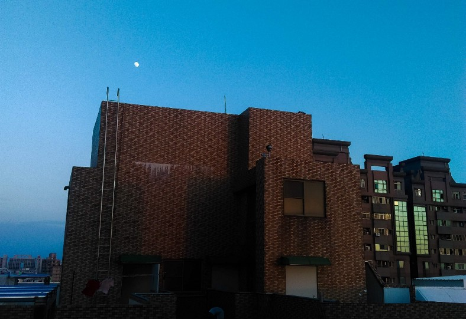
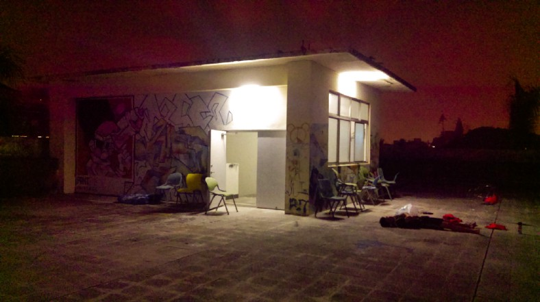
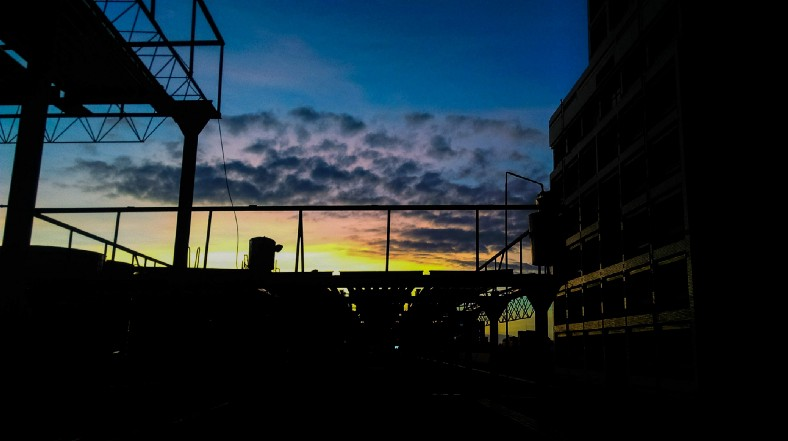

Rooftop
DEC 27, 2019
我其實記不大起來自己是從何時開始喜歡跑上頂樓
一個早期的記憶是小學校園中設有一座鐵架子構成的器材，器材的玩法是在那些由鐵鍊連結的幾何造型之間攀上攀下。但比起和其他孩子在下方競逐，我總是更喜歡一股作氣地爬到最上方，並且佔據那個空間，往往一坐便是一整節下課。
或許是從那時吧，開始對高處產生特殊的癮。
站得高有一個好處，能以鳥族俯瞰世界的姿態，看見那些平時看不見的細節。透過這樣的視角凝視人車如螻蟻般流動，這龐雜的人世也瞬間變得細小，彷彿人間的憂愁也一同縮小般。
就像漂流的太空人從氣層外回頭看地球，種種事物也不過是滄海一粟罷了。
 / stair to the moon /
...
曾有一段時日是這樣的，我追逐那些地點。
無論是高中的教學大樓、大學時代的宿舍、系館、巷弄間的古蹟，我總是不斷地回到那些建物的最高點。
這些頂樓，在大部分時間是沒有其他人的，就拿C大的女宿來說好了:若剛好在日落時分上來，便會望見燒灼的天空被頂樓那我永遠不知道何用途的欄杆切割成無數個長鏡頭；夜半時分的頂樓神秘而安靜，好天氣的時候可以看到些微較亮的星子，運氣不好的話大概只能看見粉紅色的夜空 — 啊沒錯，粉紅色的，我兒時的住處因為離市中心很遠，是見不到這樣粉紅色的夜空的，這是這座城市數百座夜裡仍努力發光的樓房、霓虹與路燈，與南部的空氣汙染共重創作的產物。
由於頂樓沒有他者，似乎唯有我一人見證那樣特定時刻，那樣特定視角的天空。
那些帶有破敗感的頂樓，地面的斑駁的防水漆總是層層疊疊。用途不明的物件被棄置在這 — 遭淘汰的桌椅殘餘的肢體、某人遺忘的生活用品……或是大大小小、色彩斑斕、由其餘經過此地的靈魂在此留下的塗鴉，在頂樓以狂傲的姿態存在著，卻同時有如被遺棄的生物哀鳴。
獨具個性的簽名、意氣風發的「少年」二字、蜷曲在角落的「我不會想念」……我好奇當初寫下這些的人們現在過著怎樣的生活? 當年在頂樓寫下的那一筆，在他們生命中又具有多大的重量呢?在這裡許下的夢想與誓言，究竟成不成真，沒有人知曉，但必定是誰在那見證了過程吧。散落的符碼成為作者的一小塊碎片留在此地，待他者解讀。
 / youth /
...
在那段日子之後又過了許多日子，對頂樓的迷戀沒有蹤跡地，隨著時間逐漸褪去。自從去年夏天搬到無法通往頂樓的新住處之後，生活中更少了一處讓我往高處去的理由。後來的我可能更常躲在房間和螢幕對望，對自己生氣，或是索性於被窩中遁入黑暗。
我已許久沒有在深夜於頂樓看那人車經過，噢，其實在那時間點並沒有多少人車經過，會經過的大概只有無限的思緒。夜晚的頂樓不再神秘而安靜，近來的夜晚大多是黑色的，甚至可說是無色無味。或許我逐漸明白天空不是只屬於我一人的。
然而，我開始想，往後若有能力自行選擇安身的居所時，什麼都可以調整，唯有一點不能妥協，那就是我希望，這個房子必須擁有一個頂樓。
 / fresh air /
***這個是極短篇啦，其實我覺得沒有寫到很好，感覺可以再挖更深然而時間有限...總之，沒有要傳達任何積極或消極的旨意，只是記錄與重新想像。可以當作我看著這些過往的照片來敘事吧，書寫某段時期的執著與想望。內容亦真亦假，若有雷同就讓它雷同。